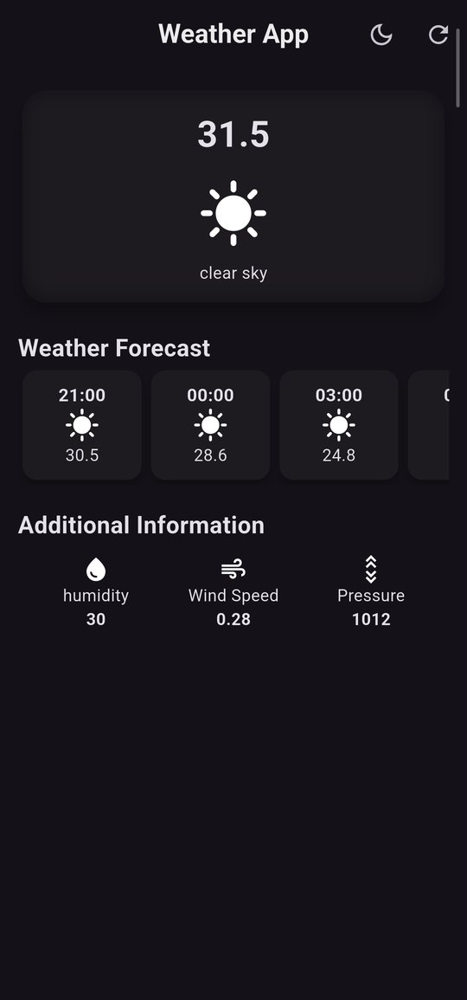

Personal project
Weather App
A practice project that pulls live forecast data from the OpenWeatherMap API and presents it through a frosted-glass current-conditions card, an hourly forecast strip, and quick readouts for humidity, wind, and pressure. Theme choice (dark/light) is saved locally so it's remembered between sessions.
- Live weather data via REST calls to OpenWeatherMap
- Frosted-glass ("glassmorphism") current-conditions card
- Scrollable hourly forecast strip
- Dark/light theme toggle, persisted with
shared_preferences
Hardest part: getting the theme-persistence logic to reliably save and reload the chosen theme.
FlutterDartHTTPOpenWeatherMap APIshared_preferences
View code on GitHub →
